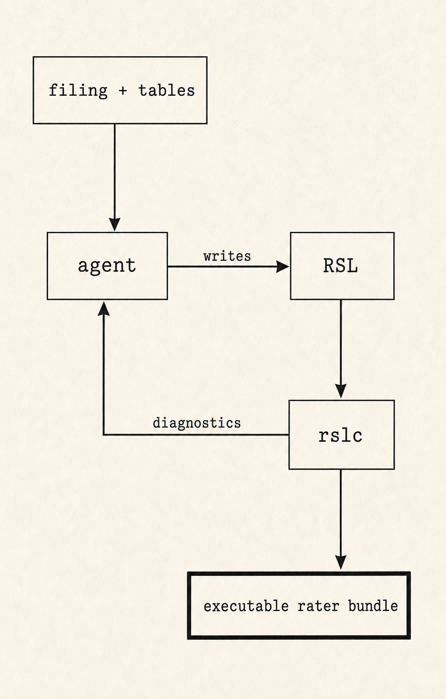
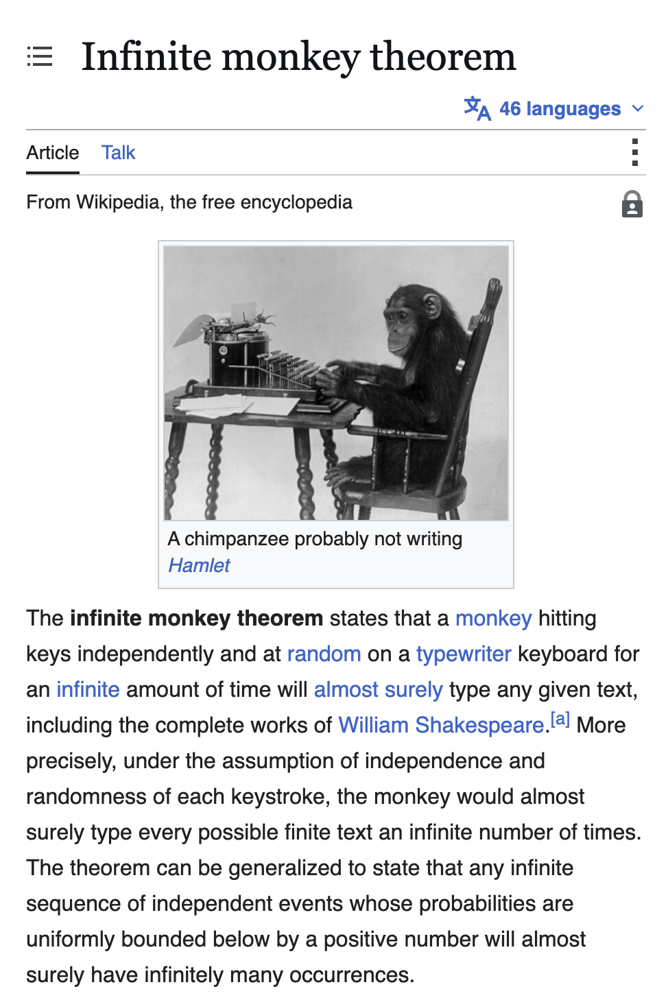

Designing a compiler for an agent-written DSL
I recently got to build a compiler for a domain-specific language at work. At Effective, one product we offer is the ability to design, host, and reverse-engineer competitor pricing algorithms from their rate filings. I wrote a little about our initial experiments with this idea here.
The gist of it is that rating algorithms, or raters, compute an insurance premium from a large number of factors and input values. In practice, a rater is a giant deterministic program made from table lookups, arithmetic, branches, and aggregation over objects. These programs are valuable because they are the pricing function for how insurance carriers operate in a market.
A deployed rater should behave like a total function over its declared input type: every valid input should produce either a rating result or an explicit rejection. This gives us some useful constraints for a compiled, executable DSL (Rating Specification Language or RSL) that seems easier for agents to reason about than a more flexible language like Python or TypeScript, probably because agents do very well at writing code until a compiler stops yelling at them.


Eventually, either models will get good enough to one-shot these programs in any programming language from a universe of PDF and Excel data and we can throw out RSL and its compiler, or RSL will become valuable enough for us to train a model that is particularly good at writing it.
What properties do we want?
At a high level, we want the compiler to make it hard to represent a rater that is ambiguous, incomplete, or impossible to inspect.
- One source of truth for semantics and backend parity. The native evaluator, Python export, Excel export, and JSON representation should all be projections of the same typed program, rather than separate implementations of what RSL means.
- The standard properties of a total function. For any valid input, the rater should produce either a rating result or an explicit rejection, and the same program, tables, and inputs should always produce the same result.
- Total lookups. If a program reads from an ordinary rating table, every possible runtime key should select exactly one row under that table's matching rules.
- Static errors where possible. Missing references, incompatible types, malformed tables, and other structural problems should fail at compile time rather than turn into strange premiums at runtime.
- Introspection. The compiler should be able to answer questions like: what does this value depend on, which source filing did this calculation come from, what inputs can reach this branch, and what table does this lookup use?
Why write a compiler?
We needed a few things from a product standpoint:
- We offer the ability to export raters as Python or Excel, and need JSON to power some UIs.
- We need to introspect on the program so the agent has a richer set of debugging tools than an out-of-the-box compiler provides.
- A constrained DSL reduces the review surface. More flexible languages gave agents too many escape hatches for setting default values, implementing standard operations in inefficient ways, and wasting tokens on irrelevant boilerplate.
- A constrained DSL lets us add things that would be annoying for humans to maintain manually, like required citations to source documents, explicit rating outcomes, and proofs that ordinary table lookups are total over their declared domains (which lets us catch some table extraction errors at compile time).